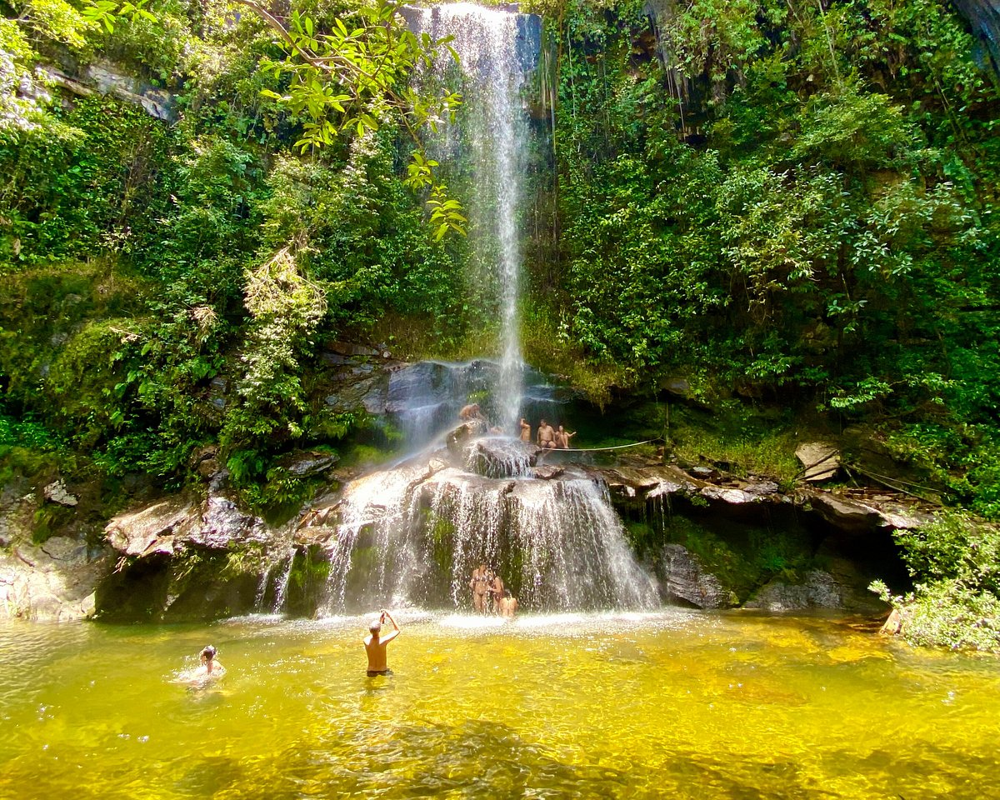
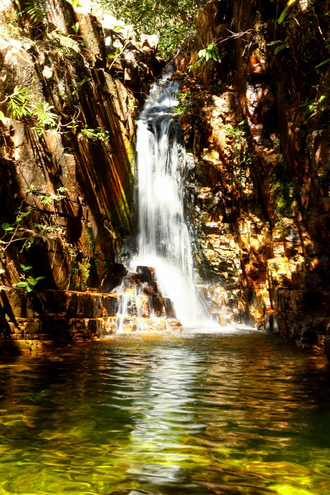

Pirenopolis
E uma pequena cidade do interior de Goiás, tombada como Patrimônio Nacional, que conserva seu aspecto antigo e bucólico, cercada de morros e cachoeiras. Um retrato vivo da história goiana, onde um povo hospitaleiro, alegre e festivo, convive com um ambiente de extrema beleza natural.
3 destinos imperdiveis em pirenopolis
1 cachoeira do Rosario
A Cachoeira do Rosário é um dos principais atrativos de Pirenópolis, com a queda livre mais alta da região. Imagine-se num oásis de águas cristalinas mesmo durante o período chuvoso, cercado pelo cerrado rupestre, campos, várzeas, mata de galeria, fauna e flora, piscinas naturais, gruta atrás da cachoeira de 42 metros de queda negativa, proporcionando um banho incrível embaixo da cachoeira, árvores centenárias, trilhas terapêuticas Venha viver a verdade da vida, a simplicidade e a exuberância da natureza.
2 cachoeira dos dragoes
O clima tranquilo que cerca a região onde estão as Cachoeiras dos Dragões tem explicação: as quedas d’água estão localizadas dentro de uma propriedade onde funciona o Mosteiro Zen Eisho-Ji. Ainda na cancela de entrada, é possível ver que se trata de um reduto cercado de paz, onde até silêncio é pedido aos turistas para que seja preservada a meditação dos monges. Distante 40 km de Pirenópolis, o conjunto de oito cachoeiras agrada a quem busca lugares mais conectados à natureza e também com menos gente.

3 Rua do lazer
Os deliciosos sabores do interior de Goiás estão bem representados nos cardápios dos restaurantes de Pirenópolis, que agradam também a quem busca receitas mais elaboradas e pratos internacionais.Os restaurantes de Pirenópolis se concentram principalmente no Centro Histórico, onde diversas ruas oferecem os mais variados cardápios. Para ir direto à mais movimentada, vá à Rua do Rosário, também chamada de Rua do Lazer.